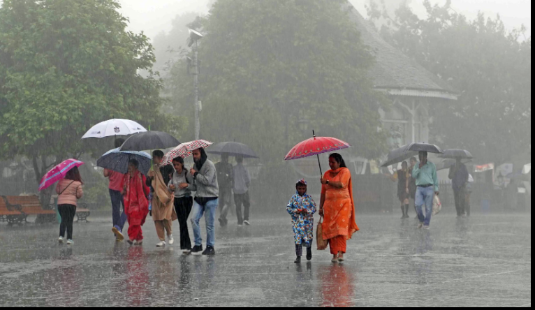
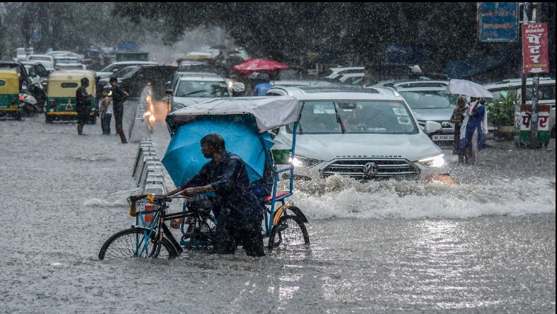
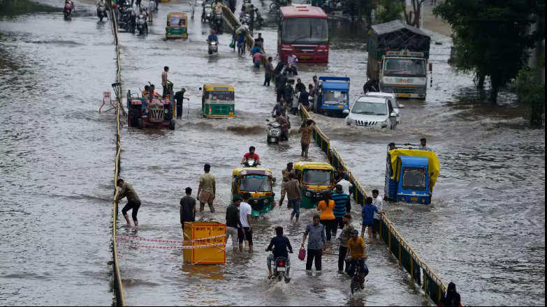

India Meteorological Department (IMD) has issued a heavy rainfall warning for several parts of India on August 23, 2026 . Heavy showers are expected in areas including Uttarakhand, Odisha, central India and the Northeast, while parts of southern India may also experience thunderstorms, lightning and strong winds . Odisha could see very heavy rainfall in some locations.
The heavy rain may lead to waterlogging, traffic disruptions and localized flooding, particularly in vulnerable areas. People in affected regions are advised to follow local weather updates and take necessary precautions.

*Uttrakhand :
Heavy rainfall is expected, with the possibility of intense spells in some areas.
*Odisha :
Some areas may receive very heavy rainfall.
*Northeast India :
Several northeastern states are expected to experience heavy showers.
*Central and eastern India :
Rainfall activity is expected to continue.
*Southern India :
Parts of Andra Pradesh, Karnataka and Tamil Nadu may heavy rain, thunderstorms and gusty winds.
*Delhi-NCR :
The latest forecast indicates continued rain activity, although Delhi-NCR is expected to see lighter rain compared with some other affected regions.

*Safety : People can avoid travelling duing dangerous rain, thunderstorms, or flooding conditions.
*Flood prevention : Alerts give authorities time to prepare for possible flooding, helping to minimize damage and protect lives.
*Farmers : Farmers can protect crops and plan farming activities according to expected rainfall.
*Emergency preparedness : Government agencies can arrange rescue teams and other emergency services service in vulnerable areas.
*Early Warning : Most importantly, an alerts gives people time to take precautions instead of reacting after a disaster occurs.

If you're in anaffected area, it's sensible to :
* Follow the latest IMD/local administration alerts.
* Avoid unnecessary travel during intense rain or thunderstorms.
* Stay away from flooded roads and streams.
* Take extra care during lightning and strong winds.